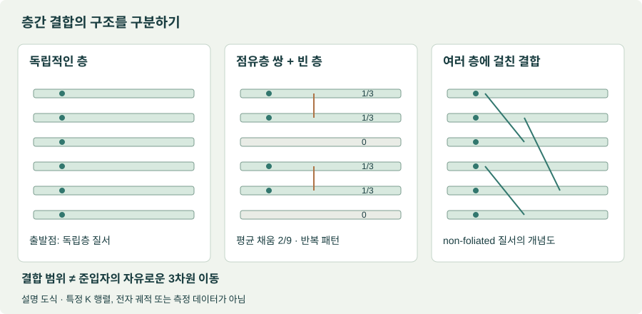
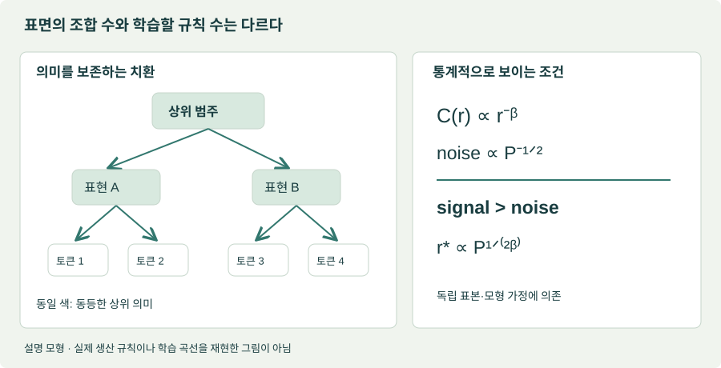
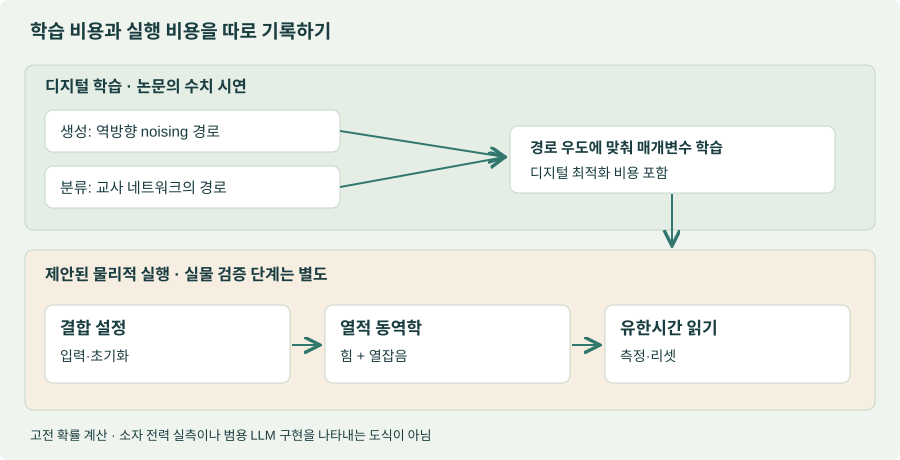

EDITORIAL OVERVIEW
구조와 요동으로 읽는 이번 달의 세 주제
Journal Club for Condensed Matter Physics(JCCM)의 2026년 9월 추천은 세 가지 질문을 나란히 놓는다. 층 사이에서 전자가 거의 이동하지 않아도 상호작용은 새로운 위상질서를 만들 수 있는가? 조합 가능한 입력이 많을 때 신경망은 어떤 통계적 구조를 먼저 배우는가? 열잡음을 계산 오류가 아닌 계산 자원으로 사용할 수 있는가? 공통점은 물리학의 언어로 복잡한 상태공간을 다룬다는 데 있다. 세 분야가 같은 알고리즘이나 같은 장치로 합쳐졌다는 뜻은 아니다.
이 리뷰는 9월 추천 목록의 세 해설에 연결된 원 논문 여섯 편을 읽는다. ‘최근 추천’과 ‘최근 발표’를 구분해야 한다. 적층 위상상 두 편은 2026년 프리프린트지만, 계층 학습 두 편은 2024년 연구다. 열역학 계산 두 편은 2026년 저널 게재 연구이며, 여기서는 공개 프리프린트 본문으로 기술 내용을 대조했다.
| 추천 해설 | 선정 논문 | 지금 확인된 범위 |
|---|---|---|
| Sidhartha Parameswaran · Yves H. Kwan 적층 분수 양자 홀 상태 | Das 외 — foliated FQH Jin 외 — non-foliated FQH 2026년 6·7월 프리프린트 | 유한계 수치 계산·변분 상태·유효 이론. 물질에서의 관측 보고가 아니다. |
| Anirvan Sengupta 계층 구조의 학습 문턱 | Cagnetta 외 — Random Hierarchy Model Cagnetta · Wyart — 언어 구조 학습 PRX · NeurIPS, 2024 | 합성 데이터 모형과 자연어 비교. 일반적인 다항시간 학습 증명은 아니다. |
| Alexei V. Tkachenko 열잡음 계산 | Whitelam — 생성형 열역학 계산 Whitelam — 경사하강 학습 PRL · PNAS, 2026 | 고전 확률 동역학의 수치 시연과 에너지 추정. 장치 전력 실측은 아니다. |
리뷰의 판단. 첫 묶음은 상호작용을 설계해 허용되는 위상질서를 바꾸는 연구이고, 둘째는 데이터에서 구조가 통계적으로 보이기 시작하는 조건을 찾는 연구다. 셋째는 학습된 계산을 물리적 확률 과정으로 옮기려는 연구다. 비교할 때는 각각 상의 안정성, 표본 복잡도, 장치 전체의 비용을 물어야 한다.
01 / LAYERED TOPOLOGICAL ORDER
적층한다고 반드시 ‘독립적인 2차원 상태의 묶음’은 아니다
층간 이동과 층간 상호작용은 다른 설계 변수다
터널링은 한 층의 전자를 다른 층으로 옮기는 과정이다. 쿨롱 상호작용은 전자가 층을 건너지 않아도 작용한다. 따라서 ‘이동은 약하고 상호작용은 강한’ 적층계를 만들 수 있다. 이것은 독립층을 쌓는 조립 방식과도, 강한 층간 혼성화로 보통의 3차원 전자띠를 만드는 방식과도 다르다. 회전된 층의 운동량 불일치와 층간 거리는 두 효과를 조절하는 서로 다른 손잡이다.
Foliated 위상질서에서는 특정 2차원 층을 추가하거나 제거하는 관점이 질서의 분류에 중요하다. 반면 non-foliated라는 말은 그러한 독립층의 합으로 환원되지 않는 위상적 결합을 가리킨다. ‘3차원’이라는 제목만 보고 준입자가 세 방향으로 자유롭게 움직이며 교환된다고 읽어서는 안 된다. 위상적 결합의 범위와 준입자의 이동 가능성은 별도로 따져야 한다.
Das 등의 논문은 유한 적층계의 정확 대각화와 모형 상태를 이용한다. 9층 예에서는 [1/3, 1/3, 0]의 점유 패턴이 반복되는 trimerized Fibonacci 상태를 제시한다. 두 점유층의 비가환 질서와 빈 층이 묶인 구조다. 이 예의 층당 평균 채움은 2/9이며 모든 층이 균일하게 1/3인 상태가 아니다. 수치적 근거는 유한계 이론의 근거이지, 대면적 물질에서 상이 구현됐다는 증거가 아니다.

Fibonacci 애니온과 무리수 통계각을 구별하기
Fibonacci 애니온은 두 준입자가 합쳐질 때 두 종류의 결과를 허용한다. 통상적인 표기에서 비자명한 종류 τ는 τ × τ = 1 + τ라는 융합 규칙을 갖는다. 그 양자 차원 φ = (1 + √5)/2가 무리수라는 사실은, 교환 위상을 π로 나눈 값이 무리수라는 주장과 다르다. ‘무리수’라는 공통 단어만으로 두 질서를 같다고 할 수 없다.
Jin 등의 논문은 회전된 반데르발스 다층계의 후보 상태를 비교하고, 무한 적층 유효 이론에서 무리수 통계각을 다룬다. 예를 들어 (3100) 상태의 자기 교환각은 θ = π/√5다. 정수 K 행렬 기반 구조를 읽으면 이것은 Fibonacci 비가환 융합과 구분되는 Abelian 통계의 확장으로 이해할 수 있다. 이 구분은 본 리뷰의 이론 해석이다.
이 한 줄이 무한층 한계의 중요성을 보여준다. 유한 행렬에서는 정수끼리 나눈 값이 나오지만, 층 수를 무한히 늘린 극한은 다른 구조를 허용한다. 실제 시료는 유한하다. 실험에서 가까운 값을 측정하더라도 그 결과만으로 수학적 무리수성을 증명할 수는 없다. 전하·수송·상관 특성을 함께 제약하고, 경쟁 상태가 같은 관측을 설명할 가능성을 줄여야 한다.
02 / HIERARCHY AND SAMPLE COMPLEXITY
학습을 제한하는 상관관계의 가시성
조합 가능한 문장이 매우 많다는 사실만으로 학습에 모든 문장이 필요하다는 결론은 나오지 않는다. 관측값이 공통 규칙으로 만들어진다면, 학습할 대상은 개별 조합의 목록보다 작을 수 있다. 반대로 규칙이 존재해도 표본에 충분히 드러나지 않으면 모델은 그 규칙과 우연한 상관을 구별하기 어렵다. 이 두 관점을 분리하면 계층 학습 논문의 문제 설정이 선명해진다.
다항식이라는 말의 기준 변수를 확인해야 한다
Random Hierarchy Model(RHM)은 동등한 생산 규칙을 가진 합성 분류 데이터로 이 문제를 다룬다. 깊이 L, 분기 수 s, 규칙 수 m, 클래스 수 nc를 사용하면 입력 크기는 d = sL, 보고된 표본 문턱의 스케일은 다음처럼 쓸 수 있다.
깊이를 변수로 잡으면 지수식이고, 입력 차원을 변수로 잡으면 다항식이다. 두 표현은 모순이 아니다. 어떤 변수와 어떤 매개변수를 고정하는지가 주장의 일부다. 또한 필요한 표본 수가 작다는 것과 그 표본에서 정답을 효율적으로 계산할 수 있다는 것은 다르다. 최적화 단계 수, 네트워크 폭, 메모리와 추론 비용은 별도의 계산 복잡도다.
계층 모형을 직관적으로 읽는 방법은 ‘같은 뜻을 보존하는 치환’을 생각하는 것이다. 상위 범주가 하위 표현 몇 가지로 바뀌고, 각 표현이 다시 여러 토큰 조합으로 바뀐다. 학습자는 표면 토큰을 외우는 대신 같은 범주를 유지하는 치환에 둔감해져야 한다. 이것은 설명용 비유이지, 실제 언어나 분자 데이터가 이 무작위 생성 규칙을 정확히 따른다는 가정은 아니다.

긴 문맥을 사용할 수 있는가, 긴 문맥에서 배울 신호가 있는가
Cagnetta와 Wyart의 언어 구조 연구는 계층 상관과 유한 표본 잡음을 연결한다. 상관 신호가 거리 r에 따라 C(r) ∝ r−β로 줄고 독립 표본 잡음이 P−1/2로 감소한다면, 신호가 잡음을 넘는 범위는 r* ∝ P1/(2β)로 늘어난다. 합성 모형의 분석과 자연어 코퍼스 비교를 같은 강도의 보편 정리로 읽어서는 안 된다.
리뷰 관점에서 중요한 것은 문맥 창의 물리적 길이와 통계적으로 유용한 문맥 길이의 차이다. 시스템이 많은 토큰을 받아들여도 먼 위치의 관련 정보를 학습했다는 보장은 없다. 데이터 중복, 문서 간 의존성, 토큰화가 달라지면 단순한 독립 표본 근사가 흔들린다. 모델 용량이 모자라는 경우와 학습 데이터의 신호가 부족한 경우도 같은 학습 곡선처럼 보일 수 있다.
03 / THERMAL-NOISE COMPUTING
학습된 계산을 열적 동역학에 담는다는 것
열잡음은 미세한 물리 장치에서 피하기 어려운 요동이다. 목표가 단일한 결정값이 아니라 분포에서의 샘플 생성이라면 요동 자체를 이용하는 설계도 가능하다. 다만 ‘잡음이 있으니 생성 모델이 된다’는 뜻은 아니다. 힘, 결합, 온도, 초기화와 관측 시간을 함께 정해야 원하는 분포가 나온다.
첫 항은 학습된 에너지 지형의 기울기가 상태를 미는 방향이고, 둘째는 열적 요동이다. 충분히 긴 시간의 평형 분포와 정해진 시각의 상태 분포는 같지 않을 수 있다. 생성이나 분류에 쓰는 읽기 시간이 유한하다면, 그 시간을 포함한 동역학이 모델의 일부다. 장치가 ‘자연스럽게’ 움직여 준다는 말로 관측 프로토콜을 생략할 수 없다.
생성: 잡음을 거꾸로 지우는 경로를 학습한다
Generative Thermodynamic Computing은 noising 경로를 역방향으로 따라갈 확률을 높이도록 고전 확률 동역학의 매개변수를 학습한다. 작은 숫자 이미지 예제로 생성 가능성을 시연한다. 핵심 제안은 매 단계 외부 신경망이 denoising 힘을 계산하는 대신, 학습된 힘을 물리적 결합에 담아 실행하는 것이다. 현재 근거는 수치적 개념 시연이며 범용 생성 모델의 품질 검증이 아니다.
이 관점은 평형 에너지 기반 모델과도 구분된다. ‘좋은 이미지를 낮은 에너지에 둔다’는 직관만으로는 특정 읽기 시각의 출력 분포를 설명할 수 없다. 역방향 경로를 잘 따라가도록 학습하는 것과 아주 오래 기다려 평형 샘플을 얻는 것은 다른 목표다. 따라서 생성 품질을 비교할 때는 샘플링 시간과 초기화 방법도 함께 보고해야 한다.

분류: 교사의 출력보다 동역학을 가르친다
Training thermodynamic computers by gradient descent는 교사 네트워크의 경로를 이용해 확률 동역학을 학습한다. MNIST에서 교사 top-1은 97.3%, 학생의 단일 경로 top-1은 91.7%, 10개 경로 평균은 92.0%로 보고된다. 논문의 107배 이상 에너지 이점은 계산·장치 가정을 사용한 추정이며, 동등 정확도의 실제 장치를 콘센트에서 비교한 값이 아니다.
| 항목 | 확인할 질문 |
|---|---|
| 품질과 반복 수 | 같은 정확도를 달성하는가? 여러 경로 평균에 필요한 시간·에너지까지 포함했는가? |
| 전체 실행 주기 | 입력 설정, 결합 프로그래밍, 읽기, 리셋, 냉각·보정 비용을 어디까지 포함하는가? |
| 학습과 수명 | 디지털 학습 비용은 몇 번의 추론에 나누어 배분하는가? 드리프트 때문에 얼마나 자주 재학습하는가? |
| 물리적 재현성 | 소자 불균일성, 온도 변화와 시간 상관 잡음에도 성능이 유지되는가? |
열역학적 계산이라는 명칭은 여기서 양자 계산을 뜻하지 않는다. 사용한 모형은 고전 확률 변수의 동역학이다. 또한 열적 요동을 계산에 활용하는 것과 에너지가 들지 않는 계산은 다르다. 경계 밖으로 밀려난 비용이 없는지 확인해야 한다. 실물 검증에서는 이 질문이 알고리즘의 매력만큼 중요하다.
REVIEWER PROPOSALS
세 주제를 실제 연구로 옮길 때의 최소 검증
다음은 논문의 결과가 아니라 후속 연구 제안이다. 세 분야를 섣불리 하나의 플랫폼으로 묶는 대신, 각 분야의 주장이 실패할 수 있는 조건부터 시험하는 편이 유용하다.
- 적층 위상상: 같은 후보 상태에서 층 수, 층간 불균일성과 잔류 터널링을 하나씩 바꾸고 경쟁 상태와 비교한다. 위상질서의 지표와 실험에서 읽을 수 있는 수송·분광 신호를 연결하되, 한 신호로 상을 확정하지 않는다. 무한층 통계각의 유한계 접근과 비가환 융합의 검증은 별도 과제로 둔다.
- 계층 학습: 계층 규칙과 치환 수를 알고 있는 데이터로 먼저 표본 문턱을 재현한다. 이후 자연어·연구 문서의 길이, 중복률과 정보 위치를 통제한다. 입력 차원에 대한 표본 스케일링과 학습 실행시간을 별도 축으로 기록한다.
- 열적 계산: 디지털 기준선과 정확도를 맞춘 뒤 단일 경로와 다중 경로의 지연·에너지를 비교한다. 장치가 없다면 시뮬레이션 결과와 하드웨어 비용 가정을 별도 표로 보고한다. 장치가 생기면 입력부터 출력·리셋까지의 전체 주기를 실측한다.
재료·분자 AI에도 적용할 수 있는 것은 우선 검증 방식이다. 계층적 표현은 데이터 효율을 높일 수 있지만 화학적 불변성과 데이터 분할을 확인해야 한다. 열적 샘플러는 후보 생성의 가능성을 열지만 분자 유효성, 합성 가능성이나 물성 예측을 저절로 보장하지 않는다. 이번 여섯 편에 OLED·TADF 소자 성능을 검증한 연구가 들어 있는 것은 아니다.
BOTTOM LINE
물리학이 AI에 제공하는 것은 비유보다 검증 가능한 조건이다
적층 연구는 독립적으로 조절할 수 있는 자유도가 새로운 상을 만들 수 있음을 탐색한다. 계층 학습은 데이터 속 신호가 드러나는 문턱을 묻는다. 열적 계산은 학습된 동역학을 실행하는 데 어떤 물리적 비용이 필요한지 묻는다. 세 주제를 연결하는 것은 구조에 관한 주장과 그 주장을 검증하는 조건이다.
따라서 읽고 남겨야 할 문장은 세 가지다. Fibonacci 비가환성은 무리수 교환각과 같지 않다. 다항 표본 복잡도는 일반적인 다항시간 학습을 뜻하지 않는다. 시뮬레이션 기반 에너지 추정은 장치 전체의 에너지 이점 실증이 아니다. 이 구분을 지키면 이론의 새로움을 줄이지 않으면서도 연구의 다음 단계를 정확히 정할 수 있다.
SOURCES / VERSION BOUNDARIES
참고 자료와 검토 버전
- Journal Club for Condensed Matter Physics, September 2026 selections. 추천 페이지: Parameswaran · Kwan, Sengupta, Tkachenko. 해설 DOI: 10.36471/JCCM_September_2026_01, _02, _03. 공개 추천 페이지 확인; 해설 PDF 미열람.
- Das 외, Three-dimensional Foliated Fractional Quantum Hall Phases. arXiv:2606.19426, v1 본문, 2026-06-17. 프리프린트.
- Jin · Lim · Kim · Cho, Three-Dimensional Non-Foliated Fractional Quantum Hall Phases with Irrational Anyons in Twisted van der Waals Multilayers. arXiv:2607.13127, v1 본문, 2026-07-14. 프리프린트.
- Cagnetta · Petrini · Tomasini · Favero · Wyart, How Deep Neural Networks Learn Compositional Data: The Random Hierarchy Model. Physical Review X 14, 031001 (2024). 검토 본문: arXiv:2307.02129v5, 2024-07-03.
- Cagnetta · Wyart, Towards a theory of how the structure of language is acquired by deep neural networks. NeurIPS 2024. 검토 본문: arXiv:2406.00048v3, 2024-10-29.
- Whitelam, Generative Thermodynamic Computing. Physical Review Letters 136, 037101 (2026). 검토 본문: arXiv:2506.15121v3, 2025-10-30. 최종 게재본과의 전 문장 대조는 하지 않았다.
- Whitelam, Training thermodynamic computers by gradient descent. PNAS 123, e2528413123 (2026). 검토 본문: arXiv:2509.15324v1, 2025-09-18. 최종 출판사 본문은 접근 제한으로 미열람.
정보 확인 기준: 2026-10-01. 수식은 본문 설명에 맞춰 표기를 통일했다. ‘리뷰의 판단’과 ‘후속 연구 제안’은 원 논문의 주장과 구분했다. 표지는 AI 생성 개념 그림이며, 나머지 그림은 코드로 작성한 설명 도식이다.